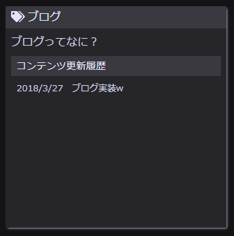

男メイドトップページにカードっぽく出してるやつ。
現状
htmlの9行目に対して、jsでgithubからコミット履歴とってきて当て込んでる。
ひとまず単純にコミットメッセージを出してるだけ。
実装案
コミットログから変更があったファイルを取得して、更新日付と各ファイルの記事名を並べてリンク張ればいいかと。
課題
- 変更があったファイルをどうやって取得するか。/blog以下に限定して。
- 記事名をどうするか。
課題検討
2.について、コンテンツになるHTMLにルールを作るのが簡単だけど柔軟性に欠ける。それってつまりマークダウン記法作ってるのと変わりないかと。HTMLを解析して記事名を抽出する方針がいいと思う。全部のHTMLを取得してクライアント側で解析すると転送量も処理量も増えて閲覧側に余計な負荷がかかるので、事前に抽出してサーバ側にため込む方式がいいか。